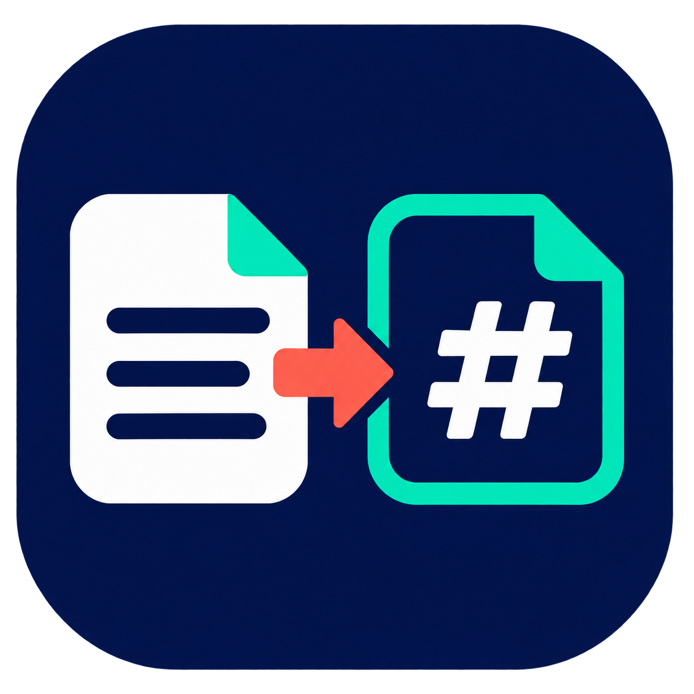

Change2MD
Files and public webpages to Markdown for any AI chat, harness or model.
Use MCP inside a compatible AI client, the universal web converter for any chat window, or the REST API, CLI and SDKs in your own applications.
Download Change2MD 0.2.0
Get the CLI, SDKs and browser extension directly from the verified GitHub release.
MCP Cloud and Local
Use the hosted MCP server with ChatGPT, Codex and other remote MCP clients. For sensitive files, the Local edition runs Microsoft MarkItDown on your own computer with desktop MCP clients. Read the client setup guide.
Web, API and automation
The web converter accepts one file or public HTTPS URL and returns Markdown to copy or download. Non-MCP applications can use the REST API, Python or TypeScript SDK, CLI, or Chromium browser extension. Large output can be retrieved in resumable chunks.
Supported inputs
PDF, Word, PowerPoint, Excel, Outlook messages, HTML, CSV, JSON, XML, EPUB, ZIP, plain text, public HTTPS webpages, and image metadata where Microsoft MarkItDown supports it.
Privacy-minded by design
Cloud files are downloaded to temporary hosted storage for conversion and deleted afterward. Local files are processed on the user's computer. Change2MD has no user accounts and does not permanently store document contents. File, output, time, redirect, network and concurrency limits protect the cloud service.
Deliberately focused
Change2MD does not provide scanned-document OCR, image captioning, audio transcription, recursive crawling, login-protected pages or private-network access. The browser extension sends only the active public page URL, not its content.